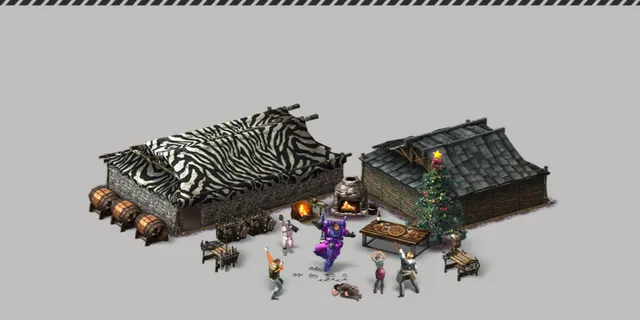
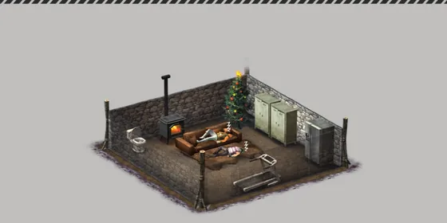
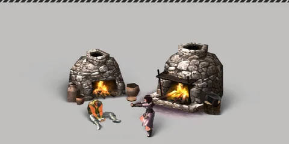

Home › Building & Land
Building Live
Build houses, furniture, workbenches and boxes — pick a site, add materials, build, then maintain, repair, demolish or package them
Some sections on this page are not ready yet

Everything a player places on the ground — tents, houses, workbenches, bonfires, boxes, furniture — is a structure. You build it from a blueprint unlocked through skills (Skills) and fill it with materials from your bag.
What you can do
- Select a construction site → add materials → build (some structures then need extra time to finish)
- Let friends help with finalization, or pay T-Stones for instant construction
- Use it: open boxes, craft at workbenches, light/put out fires, open/close gates, rest in tents, name it, write on signs
- Houses: modify parts, change textures, place wall decorations, extend floors, complete furniture sets
- Repair when Durability drops (Decay and repair) · demolish to get materials back · package it and place it elsewhere
How to build
- Open Structure Building and pick a blueprint you have learned (unlearned blueprints cannot be built)
- Select Construction Site on the ground — you must stand within 4 tiles and it must not overlap another structure
- Touch the site and put materials into each slot (the item's tags must match the slot) — anyone can help put materials into a site
- When all slots are full, press Build — some blueprints need a hammer (or saw) in your bag; the tool wears each use
- If the blueprint has a finishing time, the structure stays translucent with scaffolding until the time is up, then it becomes usable
A structure's level = the average level of the materials you used (within the blueprint's level range) · workbenches get workbench tags capped at this level and may inherit special properties from the main material (Item tags)
Where you can build
- Free ground not covered by another structure (discarded item bundles do not block)
- Not allowed: in water · on top of trees/rocks/plants that are still standing (felled ones don't block) · tiles the game marks as unbuildable · on the tutorial island — the same rules as the colored frame when you pick a site
- Someone else's Domain: not allowed unless the owner grants the «Build» permission (Domain)
- Interior furniture must sit entirely inside the frame of a finished house (not half in, half out) · in multi-floor houses you can stack furniture on different floors (upper floor above lower-floor furniture) · indoor-only items can't be placed outside
Key numbers
| Item | Value |
|---|---|
| Distance you must stand within (select site/build/use/repair/demolish) | 4 tiles |
| Site selection time | 2 + tiles covered (seconds) |
| Energy for site selection | 1 + 2 × tiles covered |
| Energy to press Build | 1 |
| Build bar / demolish bar | 5 + Durability ÷ 10 (seconds) — usually ≈ 5.7 seconds |
| Energy to demolish | 10 + Durability ÷ 2 — usually ≈ 13.5 |
| Max Durability | 7 (original-game scale) · materials with a «building durability» attribute add/subtract more (2 per level) · minimum 2 |
| Hammer wear per build/modification | 4 |
Structures built before the scale change were converted automatically — their Durability ratio and the time left before they decay away are unchanged.
Example finishing times (after pressing Build):
| Structure | Finishing time | Max helpers |
|---|---|---|
| House | 3 hours | 6 |
| Barracks | 1 hour 30 minutes | 6 |
| Small Box | 30 minutes | 2 |
| Tent | 15 minutes | 2 |
| Bonfire · Personal Storage | instant | — |
Helping and instant construction
- Help with Finalization (anyone but the owner): cuts the remaining time by total finishing time ÷ (max helpers + 1) · once per person per site · 3 helps per day
- Instant Construction (owner): pay T-Stones based on the time left
| Time left | T-Stones |
|---|---|
| up to 1 minute | 1 |
| 15 minutes | 15 |
| 30 minutes | 30 |
| 1 hour | 60 |
| 3 hours | 122 |
| 1 day | 780 |
| 7 days | 3,000 |
Prices between these points scale linearly.
Houses and furniture

- Houses (and Barracks) can be dragged to size; materials scale with size · the maximum size follows your house-size skill (2 × 2 tiles to start) · houses can be rotated
- A finished house comes with one Basic Wooden Door Frame in the middle of its first wall — you can walk in and out right away (older houses without a door got one automatically) · move or remove it on the Wall Decoration screen
- Modification: swap the materials of a part (walls, roof, …) — old materials return to your bag · parts can also get a new texture
- Wall Decoration: place doors, windows and wall decorations from your bag — take them back any time (owner only)
- Extend: House and Brick House can go up to 3 floors
| Extension | T-Stones |
|---|---|
| 1 → 2 floors | 10,000 |
| 2 → 3 floors | 20,000 |
If an extension fails (for example two extensions at the same time), the T-Stones are refunded.
Furniture sets and ambiance
Furniture inside a house counts toward a Set Effect once all pieces of a set are present, and creates an Ambiance based on its style — use Look Around inside the house to receive the ambiance effect.
| Set | Pieces needed | Effect |
|---|---|---|
| Kitchen | Cooking Storage · Cooking Countertop · Table | Unattended crafting (cooking) on the countertop in the house takes 35% less time |
| Living Room | Sofa · Interior Brazier · 2 decorations | Faster energy recovery while resting in the house |
| Bedroom | Table · Bed · Lighting | Faster fatigue recovery, health/life regen while resting in the house |
There are 6 ambiances: Cute Ambiance (higher max energy) · Fragrant Spring Ambiance (higher great-success chance when crafting) · Luxurious Ambiance · Fiery Ambiance (higher attack) · Gloomy Ambiance (animals' pre-emptive attack range shrinks) · Academic Ambiance (shorter skill research) The set menu opens when the house's Antibiotic is ≥ 20 · the ambiance menu opens when Comfort is ≥ 30
Workbenches and unattended crafting

Workbenches (kitchens, kilns, drying racks, …) are needed for workbench recipes; stand within 4 tiles. Some recipes (food, firing, drying, fertilizer) are unattended crafting — leave the job on the bench, go do something else, and collect the result when the time is up · cancelling returns the materials. See recipes in Crafting and Cooking.
Gates
House doors are wall decorations (the Basic Wooden Door Frame comes with the house · swap it for a wooden door etc. on the Wall Decoration screen). Gate-type structures can be opened/closed by touching them · on someone else's Domain you need the «Enter» permission to use the gate (this permission does not stop anyone walking into the Domain)
Demolishing
Touch your own structure → Demolish · wait for the bar (length depends on Durability, usually ≈ 6 seconds) · the animation follows the hammer in your hands (two-handed / one-handed / bare hands) — time and energy are the same
- Materials come back in proportion to Durability at the moment you demolish (badly decayed = fewer) · a site that was never built returns 100%
- Items in boxes/storage, reins in pens, wall decorations (doors, windows), workbench jobs (finished = the product · unfinished = materials back) and incoming cargo all go to the demolisher's bag · pets in pens go back to their owner
- Demolishing a house also demolishes every piece of furniture inside it (all floors) — materials and contents go to your bag, nothing is left floating
- Returned items enter your bag even if it is full (nothing is lost)
Domain owners who touch someone else's structure on their own Domain get a Demolish option · materials go to the demolisher's bag · the contents are mailed back to the original builder
Packaging and moving
Packageable structures: touch → Package (owner only). It becomes a «Packaged Construction» item or a Moving Box in your bag. Everything is kept — level, Durability, name, box contents · Durability does not drop while you carry it · place it somewhere new without rebuilding.
| Item | Value |
|---|---|
| Packaging fee inside your own Domain / your clan's Domain | free |
| Packaging fee outside a Domain | 100 × structure level T-Stones (e.g. level 50 = 5,000) |
| Packaging bar | 1 second |
- You pay before packaging · if packaging fails you get the fee back · not enough T-Stones = you can't package, nothing is lost
- Packaging a house demolishes the furniture inside back into your bag, like demolishing the house
Houses reappear when you come back
Walk far away and run back — your house and nearby structures load again as you approach, no relog needed.
No lag in areas packed with buildings Not ready
Walking around islands packed with houses and structures (e.g. Tamed Islands, Safe Houses) no longer makes the server lag — other players and animals move smoothly and your actions respond right away.
- Houses and structures still load completely and look the same
- Box contents load when you touch/open a box, not in advance
- Nothing for players to do
Not on this server Not ready
- Structures taking damage from animal or player attacks
- A time limit to finish a construction site — unfinished sites stay indefinitely